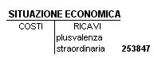

Torna alla pagina di Economia ed Organizzazione Aziendale
:: Economia ed Organizzazione Aziendale ::
Lezione 14/05/2008
CE Scalare
Il Conto Economico abbiamo già detto che deve essere in forma scalare seguendo questo schema:(Art. 2425 C.C.).
A)valore della produzione
B)costi della produzione
(A-B=differenza tra valore e costi della produzione)
C)oneri e proventi finanziari
D)rettifiche di valori finanziari
E)oneri e proventi straordinari
+ risultato prima delle imposte(ottenuto dalla somma dei campi precedenti)
- imposte d'esercizio
-----------------------
= risultato netto
Ex1
Il titolare di un'impresa delocalizza la sede produttiva dal centro città verso la periferia.
La delocalizzazione viene fatta per vari motivi:
- costi minori
- rendita
- logistica, accessibilità
- aspetti legali, esternalità
- economie di scala CostiMedi = CostiTotali / Quantità (riduzione dei costi medi, all'aumentare di pezzi prodotto)
Vende i locali di proprietà che erano stati acquistati per 138.460 e ammortizzati al 45%. La vendita frutta un incasso di 330.000.
RICHIESTA:
presentare la S.E.
SOLUZIONE:
- valore di realizzo: 330.000
- costo storico: 138.460
- fondo ammortamento(0.45 del costo storico): 62.307
- valore contabile: C.S. - f.do ammort. = 76.153
Valore Realizzo > Valore Contabile = Plusvalenza Straordinaria
330.000 - 76.153 = 253.847

Ex2
Un'impresa produce macchinari, dopo una serie di esercizi chiusi in perdita, decide di cambiare settore produttivo. Si cedono gli impianti. Acquisti: 456.000 e ammortamento al 55%, valore realizzo: 49.230.
SOLUZIONE:
F.do Ammortamento.: 55% di 456.000 = 250.800
Valore Contabile: 456.000 - 250.800 = 205.200
Valore Realizzo < Valore Contabile = Minusvalenza
49.230 - 205.200 = -155.970
Costruzioni in Economia
Come entra un'immobilizzazione nel processo produttivo?
- apporto/conferimento
- acquisto
- leasing (vedi successivamente)
- costruzioni in economia: sono immobilizzazioni costruite all'interno dell'impresa e destinate ad essere impiegate nell'impresa.
Perché?
- conservare know-how
- conservare segreti industriali
- costruire beni su misura
Come si valutano?
La costruzione in economia si valuta secondo il costo di produzione (Art 2426 C.c.)
Il costo di produzione è dato dalla somma di
- Costi Diretti: costi che imputiamo direttamente al bene. (progettazione, manodopera, MP, semilavorati etc).
- Costi Indiretti: (manodopera impiegata -anche in altri processi produttivi-, ammortamento beni strumentali, spese amministrative, energia elettrica etc..). L'attribuzione delle quote di costi indiretti alle costruzioni in economia avviene sulla base di valutazioni SOGGETTIVE.
Come si rilevano in Situazioni Contabili ed in Bilancio?
NOTA: gli importi sono uguali in entrambi i prospetti.
Nella SP lo inserisco tra le immobilizzazioni perchè parte del bene esiste e lo devo segnalare, l'altra voce nella situazione economica la metto nei ricavi perchè devo sospendere i costi fino al termine della costruzione.
1)Nel bilancio inserisco la costruzione nella SP sezione DARE sotto la voce
B) IMMOBILIZZAZIONI
II)materiali
5)costruzioni in economia
2) nel CE sotto la voce
A) VALORE DELLA PRODUZIONE
4) COSTRUZIONI IN CORSO
Ex3
Il 1/2/x l'azienda Rossi SPA inizia la costruzione in economia di un impianto al termine del 1°Es. La situazione contabile economia presenta i seguenti componenti negativi di reddito:
Nel corso del 2°Es, quindi nell'anno x+1 i costi complessivamente aumentano del 5% e si stima che l'8% di tali costi sia imputabile all'impianto in costruzione.
Il 15/7/x+2, cioè del 3°Es. si completa l'impianto e si sostengono costi pari a 6544.
RICHIESTA:
Presentare SE,SP in ciascuno dei 3 esercizi
SOLUZIONE:
SE e SP anno X, 1°Es.
SE e SP anno x+1, 2°Es.
I costi della SE sono calcolati come: costi del 1°anno + 5%. Il valore nella SP invece è l'8% di 195824.
SE e SP anno x+2, 3°Es.
A Luglio l'impianto entra in funzione.
Q.A. = 37110 * 0.125(quota di ammortamento per il 12.5%) * 6/12(perché da Luglio) = 2319
L'utilizzo dei beni strumentali. Riparazioni non programmabili e manutenzioni programmate pluriennali
Le riparazioni non programmabili possono essere effettuate
- da terzi (tramite appalto)
- dal personale interno all'azienda
Il costo sostenuto nel CE va
B)COSTI DELLA PRODUZIONE
costi per servizi
Le manutenzioni programmate pluriennali generano un costo che va inserito nel CE sezione dare sotto la voce accantonamenti per manutenzioni. Il denaro necessario viene prelevato dal fondo oneri e spese future.
Ex4
Impresa che dispone di un impianto che ogni 3 anni deve essere verniciato. Il costo della verniciatura è 24.000.
RICHIESTA:
Presentare sit. contab. dei 3 anni, sapendo che l'intervento di manutenzione il 3°anno costa 26000.
SOLUZIONE:
1°Anno
Costo Stimato = 24000 / 3 Anni = 8000
2°Anno
3°Anno
Il 3°Anno compare il debito perché il fornitore al termine dell'intervento emette fattura. Il debito misura un costo, una parte del costo è di competenza del 3°Es. Ai primi 2 anni si imputano i 2/3 del costo stimato(24000) 24000 * 2/3 = 16000.
Leasing Finanziario
Il leasing è un contratto ATIPICO(non disciplinato dal codice civile).
Ha 2 aspetti:
- Aspetto Formale: affitto di beni mobili, immobili o immateriali.
- Aspetto Sostanziale: è un FINANZIAMENTO (si paga un canone) che compare solo nel CONTO D'ORDINE ( conti di memoria che appaiono sotto la SP di bilancio)
Soggetti
- società di leasing
- società utilizzatrice del bene concesso in leasing
- società che produce i beni

Utilizzatore del bene in leasing: il bene non lo posso inserire nei beni strumentali perché lo uso, ma non lo possiedo io.
Se sono certo che al termine del contratto esercito il riscatto, vuol dire che al termine del contratto diventeremo proprietari, in nota integrativa fin dal 1° esercizio dobbiamo descrivere il bene(ART.2426 C.C.).
Al termine del contratto, se effettivamente esercitiamo il diritto di riscatto, inseriamo solo il prezzo(p) di riscatto.
Principi Contabili dei Dottori Commercialisti
Sono diversi dai principi contabili internazionali(IAS).
NOTA: Il ricorso al leasing rappresenta un finanziamento, ma il valore totale del debito di finanziamento non compare nelle passività dell'utilizzatore del bene.
Ex5
Il 1/10/X1 la Rossi SNC stipula un contratto di leasing per attrezzature a cui si applica un'aliquota di ammortamento del 20%. Il contratto scade il 1/6/X4. Il contratto di leasing presenta le seguenti condizioni:
- versamento iniziale 7500(MaxiCanone, il primo canone, più alto di tutti gli altri)
- 15 canoni bimestrali di 2500 l'uno, a partire dal 1/12/X1
- il prezzo di riscatto di 1000, esercitato 1/6/X4
RICHIESTA:
presentare le sit. contab. dei 3 esercizi.
SOLUZIONE:
1.Quanti mesi dura il contratto?
Il contratto scade il 1/06/X4
3Mesi Anno X1 + 12Mesi Anno X2 + 12Mesi Anno X3 + 5Mesi Anno X4 = 32 Mesi
2.Quanto vale il contratto di leasing?
MaxiCanone 7500 + 15Canoni Bimestrali(2500 * 15) 37500 = 45000 Valore del Leasing
3.Canone mensile di competenza economica?
(la manifestazione monetaria non determina la competenza economica).
Valore Leasing / Durata Contratto = 45000 / 32Mesi = 1406,25 Canone Mensile di Competenza Economica
4.Calcolo i canoni dell'Anno X1
MaxiCanone(01/10/X1) 7500 + 1°Canone(1/12/X1) 2500 = 10000 Totale Esborso (variazione monetaria)
- Canoni di Competenza Economica:
n° mesi di contratto nell'anno X1 = 3 (ott,nov,dic)
canone mensile di competenza economica = 1406,25
3 * 1406,25 = 4218,75 Canoni di Competenza
- è necessario sospendere una parte dei costi di canoni leasing. La quota non di competenza dell'anno X1:
10000(Canoni Pagati) - 4218,75(Canoni di Competenza Economica) = 5781,25 Risconti Attivi(quota non di competenza)
Principi Contabili Nazionali:
Il debito verso la società di leasing il 31/12/X1 ammonta a 45000(valore leasing) - 10000(canoni pagati) = 35000
NOTA:
se calcoliamo il k-funzionamento i beni in leasing non si sommano(si escludono) perché il bene in leasing non è di proprietà.
5.Calcolo i canoni dell'Anno X2
- Canoni di Competenza: 12 * 1406,25 = 16875
- Canoni Pagati e Risultanti nei Conti(figurano in contabilità generale):
Risconti Attivi 5781,25 + canoni pagati per cassa(6 * 2500) 15000 = 20781,25 Uscite Monetarie e Risconti Attivi
- costi da sospendere: 20781,25 - 16875 = 3906,25 Risconti Attivi
- valore del contratto(l'impegno verso la società di leasing il 31/12/X2):
35000(conti d'ordine anno X1) - 15000(canoni paganti nel corso dell'anno X2) = 20000
6.Calcolo i canoni dell'Anno X3
- Canoni di Competenza: 12 * 1406,25 = 16875
- Canoni Pagati (Risultanti in contabilità generale):
Risconti Attivi(al 31/12/X2) 3906,25 + Canoni Pagati nell'Anno X3(2500 * 6canoni) 15000 = 18906,25
- costi da sospendere, perché non di competenza dell'es X3: 18906,25 - 16875 = 2031,25 Risconti Attivi
- Valore del Contratto (impegni residui verso la società di leasing): 20000(impegni al 31/12/X2) - 15000(canoni pagati nel corso di X3) = 5000
7.Calcolo i canoni dell'Anno X4
Si riscatta il bene al prezzo di 1000
Si pagano ancora 2 canoni(1°Febb; 1°Apr)
- Canoni di Competenza: 5Mesi * 1406,25 = 7031,25
- Canoni in Contabilità:
Risconti Attivi(31/12/X3) 2031,25 + Canoni Pagati nell'Anno X4(2 canoni * 2500) 5000 = 7031,25
- il Valore del Contratto: 5000(impegni 31/12/X3) - 5000(canoni pagati in X4) = 0
NOTA: Il costo storico del bene riscattato rientra nel k-funzionamento e si sottopone ad ammortamento
Torna alla pagina di Economia ed Organizzazione Aziendale